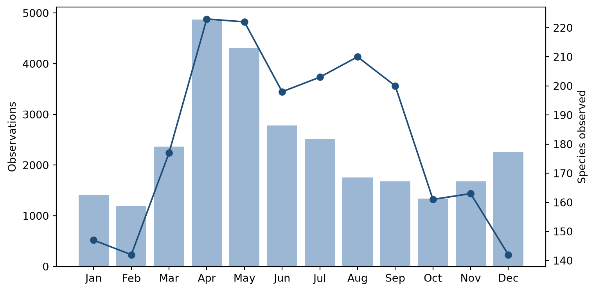
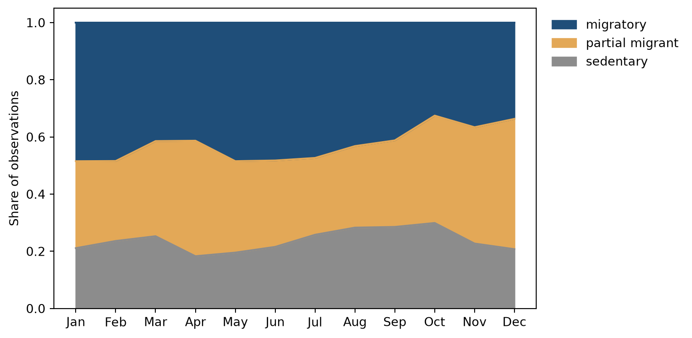
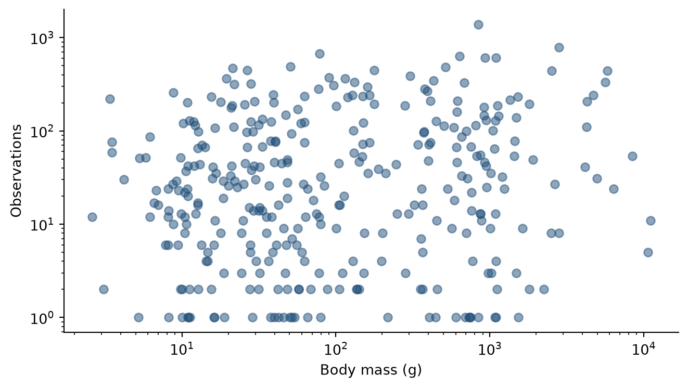

import requests
params = {"place_id": 52, "iconic_taxa": "Aves", "quality_grade": "research",
"d1": "2025-05-01", "d2": "2025-05-31", "per_page": 200, "page": 1}
headers = {"User-Agent": "STAT386 class project (your-email@example.com)"}
data = requests.get("https://api.inaturalist.org/v1/observations",
params=params, headers=headers).json()
data["total_results"] # 4,359 bird observations in May 2025 aloneWhen Do Utah’s Birds Show Up? Building a Bird Dataset from iNaturalist
data acquisition
API
birds
Why birds?
Utah sits on one of North America’s major migration routes. The Great Salt Lake alone hosts millions of shorebirds and waterfowl each year, and the birds you see in a Provo backyard in January are not the same ones you see in May. I wanted to put numbers to that change.
Community-science apps like iNaturalist make this possible. Thousands of people photograph birds and upload them with a date and location, and other users confirm the identification. That makes iNaturalist a free, constantly growing record of where birds are and when.
The question
How does the mix of bird species observed in Utah change across the year, and do migratory birds differ from year-round residents in when and where they are reported?
iNaturalist tells me what was seen and when, but not whether a species migrates or how big it is. So I combined it with a second source of species traits.
Getting the data
Two sources, one table
- iNaturalist API: every research-grade bird observation in Utah during 2025. “Research grade” means at least two people agree on the species and the record has a date, location, and photo.
- AVONET: a free trait database covering nearly every bird species on Earth, including body mass, migration behavior, habitat, and diet.
I joined them on scientific name, so every sighting picks up its species’ traits.
Steps to try this yourself
- Find the place ID. The
/places/autocompleteendpoint turns “Utah” into iNaturalist’s ID for the state (52). - Query observations. The
/observationsendpoint accepts filters likeiconic_taxa=Aves,quality_grade=research, and date ranges (d1,d2). No API key is needed. - Page through results. Each request returns at most 200 records, and the API won’t page past 10,000 results for one query. I queried one month at a time to stay under that cap.
- Flatten the JSON. Each observation is a nested dictionary. I pulled out only the fields I needed (date, coordinates, species, license) instead of
pd.json_normalize-ing everything. - Join traits. I used AVONET’s eBird-taxonomy sheet because its names match iNaturalist’s bird names most closely, and I saved species that didn’t match to a separate file to fix by hand.
The core request looks like this:
The full script, with caching and paging, is in the project repo.
Is this allowed? Collecting responsibly
Before writing a loop, I checked iNaturalist’s API Recommended Practices. A few points shaped my code:
- Rate limits. iNaturalist asks users to stay at or below about 60 requests per minute and 10,000 per day. My script pauses one second between requests, and a full year needed only about 148 requests.
- Caching. Every page is saved to disk, so re-running the script never hits the API twice for the same data.
- Identify yourself. A
User-Agentheader tells iNaturalist who is making the requests. - Privacy. I dropped usernames and user IDs. iNaturalist already obscures locations for threatened species, and I left those as they were.
- Licensing. Each observation has its own license. I only published records under CC0 or CC BY, which allow redistribution.
What the data looks like
Code
n_obs = len(birds)
n_species = birds["scientific_name"].nunique()
n_families = birds["family"].nunique()
print(f"{n_obs:,} observations · {n_species} species · {n_families} families")28,140 observations · 336 species · 60 familiesCleaning steps and what they remove
Most of the cleaning happens in the query itself. Requesting only research-grade observations means every record already has a date, a location, media, and a community-agreed species ID. I didn’t drop any rows for missing values after download.
The full download held 28,140 observations of 336 species. Thirteen species had been renamed since AVONET was published. After I fixed those names by hand, every observation matched an AVONET trait record.
These choices aren’t neutral, though. The research-grade filter leaves out observations that never got a second, confirming ID. Those are more likely to be small, drab, or hard-to-identify birds, so the dataset probably leans toward species that are easy to recognize from a photo.
Licensing creates a second filter. Each observer chooses a license, and most keep the default non-commercial license (CC BY-NC, 62%) or reserve all rights (20%). Only 3,792 observations (13.5%) are CC0 or CC BY, which allow redistribution, so the public CSV in the repo contains only those. The figures in this post use all 28,140 observations. If you rerun this post from the public file, you’ll get smaller counts and possibly different patterns, because observers who choose open licenses may not bird in the same places or log the same species as everyone else. To reproduce the full dataset, run the acquisition script yourself.
Bird sightings peak in April
Code
monthly = birds.groupby("month").agg(observations=("obs_id", "size"),
species=("scientific_name", "nunique"))
fig, ax1 = plt.subplots(figsize=(8, 4))
ax1.bar(MONTHS, monthly["observations"], color="#9bb7d4")
ax1.set_ylabel("Observations")
ax2 = ax1.twinx()
ax2.plot(MONTHS, monthly["species"], color="#1f4e79", marker="o")
ax2.set_ylabel("Species observed")
ax1.spines[["top"]].set_visible(False)
plt.tight_layout()
plt.show()
Observations and species counts both climb sharply in spring. April has the most sightings (4,871) and the most species (223), and May is nearly identical (4,311 observations, 222 species). That matches spring migration: birds that winter farther south pass through or arrive to breed, while the year-round residents are still here. The quietest month is February, with 1,194 observations and 142 species.
The two lines don’t always move together, though, and that is where observer effort shows up. In August, observations drop to 1,753, but the species count rises again to 210, which is consistent with fall migration. Shorebirds start moving south in late summer, and the Great Salt Lake is a major stopover. December is the opposite. Observations jump to 2,255, yet it ties February for the fewest species (142). More people were out with cameras, possibly during the holiday break or the Christmas Bird Count season, but they were photographing the same winter birds. So species counts are a better signal of migration than raw observation counts, which partly measure how many people are outside.
Migrants arrive and leave; residents stay
Code
share = (pd.crosstab(birds["month"], birds["migration"], normalize="index")
.reindex(columns=["sedentary", "partial migrant", "migratory"]))
ax = share.plot(kind="area", stacked=True, figsize=(8, 4),
color=["#8c8c8c", "#e3a857", "#1f4e79"])
ax.set_xticks(range(1, 13), MONTHS)
ax.set_ylabel("Share of observations")
handles, labels = ax.get_legend_handles_labels()
ax.legend(handles[::-1], labels[::-1], frameon=False,
loc="upper left", bbox_to_anchor=(1.01, 1)) # outside, top-to-bottom order
ax.set_xlabel("")
plt.tight_layout()
plt.show()
Migratory species make up the largest share of sightings for most of the year, close to half in January–February and May–June (48%). Their share drops sharply in fall, reaching its lowest in October (33%), after summer breeders have left. Sedentary species do the opposite. They’re the smallest share in April (18%), when migrants flood in, and the largest in October (30%).
Partial migrants, species where only some populations migrate, swing the most. They rise to 40% of sightings in April and peak at 46% in December. In winter, Utah’s birds are dominated by species that are year-round residents in some places and migrants in others.
The surprise is that migratory species still make up nearly half of sightings in January. AVONET classifies each species by its behavior across its whole range, not in Utah. The five most-observed “migratory” species in winter show the issue. Bald Eagles and Common Goldeneyes really are winter visitors that come south to Utah. But Red-tailed Hawks, Canada Geese, and American Kestrels live here year-round, and they’re labeled migratory only because their northern populations migrate. A species-level trait can’t capture what a bird does in one particular place. A next step would be to classify species by when they actually appear in Utah, using this same dataset.
The most-seen birds by season
Code
top = (birds.groupby(["season", "common_name"]).size()
.groupby(level=0, group_keys=False).nlargest(3)
.reset_index(name="observations"))
top.style.hide(axis="index")| season | common_name | observations |
|---|---|---|
| fall | Mallard | 298 |
| fall | Ring-billed Gull | 153 |
| fall | Red-tailed Hawk | 145 |
| spring | Mallard | 563 |
| spring | Canada Goose | 441 |
| spring | Red-winged Blackbird | 335 |
| summer | Mallard | 188 |
| summer | American Robin | 184 |
| summer | Common Raven | 165 |
| winter | Mallard | 341 |
| winter | Ring-billed Gull | 249 |
| winter | Red-tailed Hawk | 167 |
Mallards are the most-observed bird in every season, which fits a duck that is common, large, and lives on city ponds where people walk. The other top species shift with the seasons. Canada Geese and Red-winged Blackbirds stand out in spring, American Robins and Common Ravens in summer, and Ring-billed Gulls and Red-tailed Hawks in fall and winter. Almost all of them are big, conspicuous, or easy to find near people, which says as much about where observers go as about which birds are most abundant.
Are big birds over-reported?
Code
by_species = birds.groupby("scientific_name").agg(
observations=("obs_id", "size"), mass=("body_mass_g", "first")).dropna()
fig, ax = plt.subplots(figsize=(7, 4))
ax.scatter(by_species["mass"], by_species["observations"], alpha=0.5, color="#1f4e79")
ax.set(xscale="log", yscale="log", xlabel="Body mass (g)", ylabel="Observations")
ax.spines[["top", "right"]].set_visible(False)
plt.tight_layout()
plt.show()
Not really. The rank (Spearman) correlation between body mass and number of observations is only 0.13, a very weak positive relationship. Small and large birds both range from a single sighting to hundreds. The three most-observed species span a wide range of sizes: the Mallard (1,391 observations, 843 g), the Canada Goose (782, 2,812 g), and the much smaller American Robin (676, 79 g). What they have in common is that they’re everywhere people are: parks, ponds, and backyards.
The heaviest birds tell the same story from the other side. The Trumpeter Swan (about 11 kg) was reported only 11 times and the Mute Swan only 5. Being huge doesn’t help a bird get reported if it’s rare. The exception is the California Condor, the third-heaviest species (about 8.4 kg), with 54 observations. That’s a lot for one of the rarest birds in North America, and it probably reflects people seeking out a famous bird, likely in southern Utah near Zion. Overall, how common a bird is and how close it lives to people matter far more than its size.
Caveats
These counts measure where people go birding as much as where birds are. Sightings cluster around cities, trails, and weekends, and colorful or large birds are easier to photograph. A spike in observations can mean more birds or just nicer weather.
That also limits how far these results generalize. This is one year (2025) of observations from people who use iNaturalist, concentrated along the Wasatch Front and other easy-to-reach places. Remote areas, night-active birds, and species that are hard to photograph are underrepresented. The patterns here describe what Utah’s iNaturalist users recorded, not the true seasonal makeup of Utah’s bird populations, and a different year or a structured survey like eBird checklists could look different.
Learn more
- iNaturalist API documentation
- iNaturalist API Recommended Practices
- pyinaturalist, a Python client with built-in rate limiting
- AVONET paper (Tobias et al., 2022)
- eBird API 2.0, another source for bird observations
- Code and data: github.com/isaiah-cabrinha/utah-birds